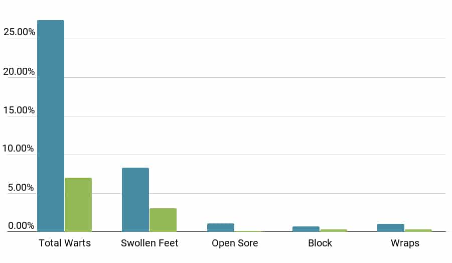
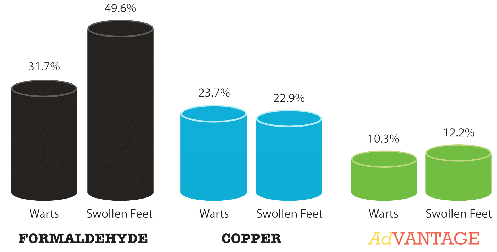

100,000+
Cows evaluated each year
Premier Footbath Products
Call or email us for a free herd evaluation and cost analysis. We measure success one cow at a time, and over 100,000 cows evaluated this year agree.
100,000+
Cows evaluated each year
72 min
More time at the feed bunk
15+
States & provinces served

Measured impact
Advantage™ footbath programs remove guesswork. The Washington State University Knott Dairy Center and hundreds of dairies documented measurable and repeatable results.
cows visited every month for 4 months across ID, WI, CA & NM.
agreement during hoof evaluations led by Vantage Dairy Supplies.
per cow per month to reduce liability from toxic chemicals.
average ear temperature drop when lesions are caught early.
Premier footbath products
Vantage blends are formulated with chemists and university partners to deliver maximum hoof health while protecting soils, employees, and margins.
Cut current footbath costs by up to 75% without sacrificing performance.
Pair with AdVANTAGE™ to reduce copper build-up by 90%.
Pre-mixed concentrate plus Copper Plus—just add water.
Ready-to-use solution for direct application on hairy warts.
Automation
We can automate your footbath system with intelligent washout and dosing technology so every bath is as precise as the first.
Watch the system walkthrough
Measured success
Activity monitoring chips recorded that cows with hoof lesions spend 72 fewer minutes per day at the feed bunk. Vantage programs reverse that trend with disciplined hoof evaluations and proven chemistry.
“Vantage has been producing quality products for the dairyman since the 1990s. If we can’t make you money, we don’t belong in your barn.”
Marty Van Tassell · OwnerHow we deliver results
From the first phone call to automation support, the Vantage team shows up with a repeatable playbook so you know exactly what happens next.
We walk barns, review hoof health history, and benchmark current costs anywhere we have dealers.
Footbath chemistry, spray protocols, and automation are tailored to each site and herd size.
We revisit after startup, compare data, and fine-tune until hoof health, milk quality, and crew safety improve.
Built for dairies
Our people understand dairy cows and design programs that keep them healthy, productive, and profitable.
Engineered to improve hoof health, milk quality, and animal comfort.
We only release solutions that meet the toughest on-farm standards.
Programs designed to eliminate hairy warts and lameness.
Better hoof health leads directly to better milk and margins.
Dealers, veterinarians, and hoof trimmers that stay on-site until it works.
We proudly validate every product on animals before it reaches your barn.
Vantage Dairy Supplies Inc.
Over 40 years ago Marty Van Tassell set a standard: quality always outranks price. Today, Vantage carries a full line of hoof health products, footbath systems, paper goods, fly control, and IPS Sires genetics while maintaining those same expectations.
“If we can’t make you money, we don’t belong in your barn.”
Marty Van Tassell · OwnerReady for a free evaluation?
Schedule a visitTestimonials
From Washington to Wisconsin, dairies rely on Vantage for consistent hoof health gains, safer chemistry, and rapid support.

Alliances & certifications
Preferred vendors trust Vantage to carry their chemistry and equipment because dairies demand the highest standard.
Make an appointment
Schedule a free evaluation and cost analysis to see how Vantage can reduce hoof issues, protect employees, and improve milk quality.
“We belong in your barn.”
Need help? Call us directly.
Tap to call